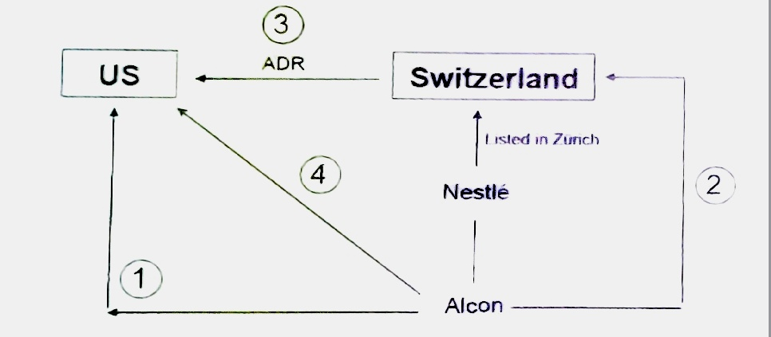
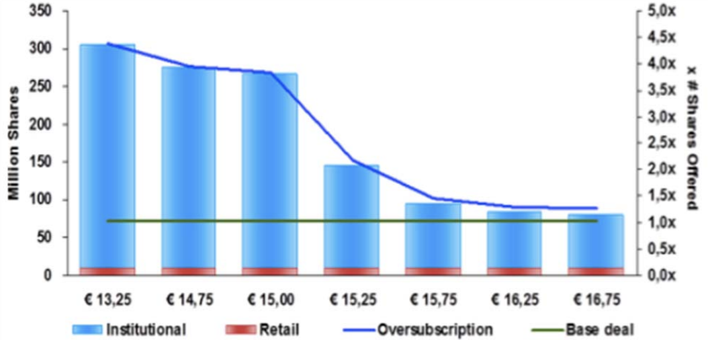

CASE OF IPO
Author: Adam Updated: 26/05/2019
1. Prada Goes IPO: reasons for IPO
Prada on Wednesday reported its lowest full-year profit since the luxury goods group floated in Hong Kong in June 2011, even as it said last year marked a turning point with the company “firmly on the pathway to sustainable growth”. —— Financial Times
What are the reasons for Prada to go IPO in Asia? Prada went for an IPO in Asia, where the fashion industry was growing, in order to promote the brand in Asia and support expansion in that country. Managing an IPO directly in Asia means that Prada meets the standards to be listed in the Asian market. And good quality product would create brand marketing. The analysis framework of the reasons are often for three aspects.
- financial reasons
- strategic reasons
- governance reasons
Prada IPO in HK fits its financial goals. First, this IPO raise a 1 billion-euro fund for the company. And second, the process of IPO reduces the D/E ratio and the cost of capital, which ends up a rising debt capability.
Prada IPO in HK fits its stratefic goals. By listing in the HK market, Prada could be more easily to expand into Asia. This could also support the growth into the markets.
Prada IPO in HK also fits its governance goals. After IPO, Miuccia Prada (70%), an Italian billionaire fashion designer and businesswoman of Prada S.p.a and her husband, Patrizio Bertelli (30%), who is also the CEO of Prada together hold 95% shares of Prada Holding S.p.a. Banca Intesa (意大利联合圣保罗银行) holds 5% of the shares of Prada Holding S.p.a.
2. Google Goes IPO: Dutch auction in IPO
In January 2004, Google announced the hiring of Morgan Stanley and Goldman Sachs Group to arrange an IPO. The IPO was projected to raise as much as 4 billion dollars. Google's initial public offering took place on August 19, 2004. A total of 19,605,052 shares were offered at a price of 85 dollars per share. —— Wikipedia
Google used this mechanism in 2004 (the last company to engage this mechanism). On August 19, 2004, Google went public and came out with its initial public offering (IPO). It turned out to be the 25th largest IPO in corporate history and the biggest technology IPO till date. Before its release, the IPO had been the subject of several controversies and the target of a lot of criticism.
Google the day before the IPO knew that some investors were willing to buy at 115 dollars per share but didn't trust them and started with a price of 85 dollars per share. At the end of the day, Google reached the price of 100 dollars but could have gone to 115 dollars. The company also reduced the number of shares it had planned to sell from 25.7 million to 19.6 million, to be sure to place the whole issue.
The auction process for Google was divided into five stages: Qualification, Bidding (the bid had to specify the desired number of shares, a share purchase price), Auction closing, Pricing, Allocation. On August 19, just a few hours of going public, Google‘s share climbed to more than 100 dollars, an increase of almost 20 percents on the initial offer. A day later, the shares fetched nearly 108.31 dollars. The IPO managed to raise nearly $1.4 billion for Google, a remarkable feat, considering the poor performance of other technology shares. Of the 1.4 billion dollars earned, Google earned nearly 1.1 billion dollars while its founders and the initial investors earned the rest. Despite all the speculation, the Google IPO had performed extremely well.
3. Luxottica Goes IPO: reasons for IPO
Luxottica raised funds in US market by managing an IPO there to reach American customers. The manager did not only want to expand via internal growth but also via M&A.
When the Italian eye glasses producer entered the US market, it was still a private company. It decided to support the growth there by listing the company in the NY Stock Exchange, in order to convince the country that it was a trustable company with a quality product, and because it had to go through formal procedures to do so. This also helped Luxottica to pay part of the acquisition price of Rayban and support the promotion costs.
PREPARATION
- Planning the IPO (Select a Global Coordinator)
Pre‐Launch
- Print prospectus
- Register for an IPO
Execution
- Pre‐Marketing
- Setting the price and Allocation
4. Facebook Goes IPO: Set price for IPO
We often have 3 methods to set a price range in a IPO.
- Fixed price offer
- Dutch Auction
- Bookbuiding
Facebook IPO was an exception to this as the IPO was justified solely with corporate governance reasons as shareholders were not members of the family (such as with Prada), but private equity investors entered at the very beginning of the ‘the facebook” and looking for an exit strategy that was easily implemented with the IPO.
The IPO of Facebook is the high-sales by pre-existing shareholders, but its secondary offering was overprised by VC/Business analysis to 9 billion dollars. Morgan Stanley, to assist Facebook in full underwriting commitment, accepted 1.1 percent of fees, such a big discount because it did not want to lose such an opportunity as there were other competitors wiling to advise the transaction.
But there is also risks that the lead underwriting doesnot put enough efforts. The estimated price range is from 34 to 38, which is 34 percents higher than the real one that ranges from 28 to 35. The number of shares demanded in the market is also over estimated by 12.5 percent to 421 million against the real demand of 337 million. It also appeared that the total shares with lock-up aggreements is about 88 precents, which added the risk of price to go downward.
What made the things worse was that because of the personal vision of the CEO, Facebook allocated 26 percents of the share outstood to the retail investors, which reduce the robust of the stock price. The amendment in the prospectus also destroied the confidence of the investors.
5. Alcon Goes IPO: Where to go IPO?
Nestlé is the world’s largest food company but also has interests in non‐food businesses. It owns the world’s leading ophthalmology company, Alcon, and holds a significant stake in cosmetics giant L’Oréal. In response to a perceived undervaluation of the parent company by the capital markets, Nestlé is considering divesting a part of Alcon.
A key decision is where to list the shares. Nestlé is a Swiss firm listed in Zürich (Swierland) but Alcon is operationally based in the U.S., where the sales of which are more than 50 percents, Nestlé executives have to weigh the tradeoffs involved in listing in New York versus Zürich and the impact the listing decision might have on the parent company.
As a CFO in Nestlé, you have four options to list the company. The first option is to move Alcon to US and become US corporation which list in US. The second option is to list in the home country of Nestlé, Swizerland. The third option is to list in Zürich and then issue ADR. The last option is to stay the company in Swizerland and listed in US. Now let's analysis one by one.

The first option will be benefit because natural investors base was locate in US. But there will be administrative and legal cost, fiscal issues and will cause intellecture prolems in swizerland. The second option is less expensive and by listing in Zürich, the company can target developed market and are more likely to approach global investors. But the investors base will be reduced and contains the risk of exchange rate. There are also limitions imposed to US investors and corporate's governance concerns.
The third option is to list in Zürich and issue ADR. ADR allows US investors to use dollors to buy and sell shares of a foreign gain. In order to qualify for an ADR, a firm has to file US GAAP account / meeting corporate governance standards, which will promote the legal protection of investors. But however, this option adds the disclosure expemnse and corporation cost, and this system contains the probability of arbitrage.
The last option is benefit for being a US form from listed in the NYE. It could also be an expensive option. But the company finally chose this option because the market appreciated Alcon and this contains a conglomerate discount.
6. Spotify Goes IPO: Not a real IPO by direct listing
Spotify chose directly listing without choosing any Investment Banks. Spotify has no issue price, so that the NYE gave it its open price rumors as 132 dollars per share. Spotify also has no clear amount of shares outstood, and also Spotify could not get any money from the listing process. On the day of IPO, the beginning price was 165, and the ending price was 149 dollars per share.
Venture capitalists and business analytics are the winners of this directly IPO. The retail investors have more opportunities to invest and this listing added transparency to the stakeholders. Investment banks are probably the loser of this directly listing. Even this process promotes efficiency and pushes the price, the company will have no dollars to sustain the growth. The direct listing raises the risk of hostile takeovers with new governance rules and regulations to the market.
7. Prysmian Goes IPO: Set the price

Prysmian, previously known as Pirelli Cables, is the former division of cables and optical fibres owned by both Pirelli Group and Telecom. In late 2001, the management tried to implement the sale of the firm in the M&A market, with no success. However, at the end of 2004, the private equity division of Goldman Sachs, valuing the deal as attractive, bought the company and changed its name to Prysmian. In 2007, Goldman Sachs started to implement an exit strategy from the investment via an IPO of the company. Goldman Sachs offered the public around 72mln shares, representing about 40% of the total capital of the company. The offer was presented to investors as a way of participating in the upside of end-markets growth by means of good execution, operating leverage and cash generation capabilities. Among the key takeaways of the equity story, Prysmian had a leading market share, growing fundamentals, a high level of investment in R&D and of diversification (in terms of products, clients and geographies) and a solid management track record.
Therefore, on the day of the IPO, you should not offer a too high price, because you would lose the most trustable investors (insurance companies and pension funds) that support the issue and avoid the underprizing puzzle. So, you might want to go public at a discount compared to the competitors, to convince investors to switch from competitor's shares to your ones. If you are a qualified investor, you understand this and appreciate it; if you are a retail investor, you don't. This is called "Discount to peers".
You always dedicate only a very small part of the issue to retail investors because, not being qualified, they do not understand what they are buying and they might sell as soon as the price drops a little, causing further price reductions. E.g. Facebook decided to sell its shares mainly to retail investors who went in panic for small reductions in price and started a massive sell off. If Facebook sold its shares to strategic investors, these wouldn't have cared. After some time, Facebook shares recovered the issue price and even went above it.
If you want to sell at a discount, you need the agreement of the entrepreneur on the investors to sell the shares to.
Results of the extensive marketing activity, which can be seen in the figure displayed above, showed that investors, while expressing concerns on the cyclicality of the cable business and on the future sustainability of margins and R&D expense level, highly regarded the good business diversification and exposure, the attractive sector trends, the high level of profitability (in terms of margins and ROIC), the top line and earnings growth and the high management credibility.
The final price for the offer, starting from an initial range of €13.25 and €16.75, was set at €15.00, which attributed the company an implied market capitalization of €2.7bn.
The final allocation of demand saw about 15% of the offer going to retail investors, with the top 10 orders essentially dominated by long money investors.
8. Fitbit Goes IPO: Primary IPO and secondary IPO
Fitbit, the procedurer of the electronic devices for sportsmen and athletes, went public in June 2015. At the time of IPO, Fitbit proposed to the market an offer of 36,575,000 shares, of which 14,187,500 shares were part of an secondary IPO. The offering price at the close of the bookbuilding was set at 20.00 USD per share. Gross spread paid to the bank syndicate was 6 percents.
- The total value of the offer is 36,575,000 x 20.00 = 731.5 million USD. (687.61 million net of 6% spread fees)
- The primary IPO is 22,387,500 x 20.00 = 447.75 million USD. (420.885 million net of 6% spread fees)
- The secindary IPO (existing share holders as a whole cashed) is 14,187,500 x 20.00 = 283.75 million USD. (266.725 million net of 6% spread fees)